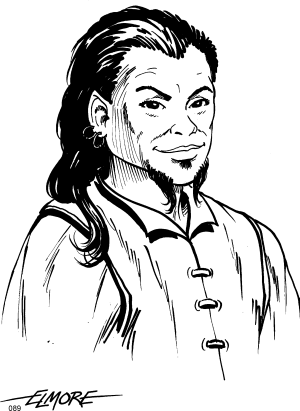
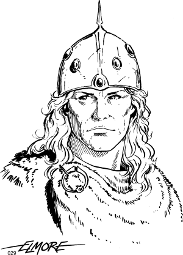

Capítulo 2: Creación de Personajes
Todo aventurero se define a través de su Hoja de Personaje. El proceso es rápido y sencillo, tal y como se describe en este capítulo. Lo normal es que los personajes empiecen como aventureros de nivel 1, aunque nada impide que creéis aventureros más experimentados. Te recomendamos que utilices una copia de la hoja de personaje incluida al final del libro para apuntar lo que sea necesario, aunque te servirá cualquier hoja en blanco.
Establece tus Atributos
Todos los personajes tienen seis atributos principales que los definen. Puedes verlos como una descripción de la apariencia física y de las aptitudes innatas de tu personaje.
- Fuerza (FUE): potencia física, capacidad de carga, etc.
- Destreza (DES): agilidad, reflejos, etc.
- Constitución (CON): aguante, resistencia, salud, etc.
- Inteligencia (INT): memoria, rapidez de cálculo, etc.
- Sabiduría (SAB): sentido común, empatía, etc.
- Carisma (CAR): personalidad, fuerza de voluntad, liderazgo, etc.
Establece su valor tirando 3d6 siete veces y asignado los seis mejores resultados como desees. El valor asignado proporciona un modificador para cada atributo tal y como se recoge en la tabla que sigue.
| Valor | Modificador |
|---|---|
| 3 | -2 |
| 4-6 | -1 |
| 7-14 | +0 |
| 15-17 | +1 |
| 18 | +2 |
El valor de los atributos puede cambiar debido a varios factores como enfermedades, conjuros, venenos o ataques especiales de algunos monstruos. Cuando el valor de un atributo cambia se debe actualizar también su modificador asociado, y cualquier otro valor derivado (Ataque, Defensa, Puntos de vida, etc.).
Elige una Raza
Elfo
Los Elfos suelen habitar en bosques grandes y frondosos. Algunos sabios opinan que son espíritus de la naturaleza y por eso prefieren vivir en ella. Otros afirman que la expansión humana los ha empujado hacia esas zonas y los elfos simplemente se han adaptado.
- Tu movimiento es 12.
- Posees el talento Vista Aguda: Ganas ventaja en las tiradas de Alerta basadas en la vista.
- Posees el talento Infravisión: Ves en la oscuridad hasta 20 metros. La visión se basa en el calor desprendido por los objetos y los cuerpos.
Enano
Los enanos parecen sentir un gran amor por la piedra, los metales y las joyas. Suelen vivir bajo tierra, en grandes mansiones que amplían y mejoran durante generaciones.
- Tu movimiento es 9.
- Posees el talento Afín a la Piedra: Ganas ventaja en las tiradas de Erudición relacionadas con la piedra trabajada y en las tiradas de Alerta para detectar trampas hechas o montadas sobre roca.
- Posees el talento Infravisión: Ves en la oscuridad hasta 20 metros. La visión se basa en el calor desprendido por los objetos y los cuerpos.

Mediano
Los medianos suelen vivir en comunidades agrícolas usualmente alejadas de los núcleos urbanos de la «gente grande». Son famosos por su humor afable y por no rechazar nunca una comida gratis.
- Tu movimiento es 9.
- Posees el talento de Escurridizo: Ganas ventaja en las tiradas de Subterfugio relacionadas con moverse en silencio.
- Posees el talento de Certero: Ganas un bono adicional de +1 en todos tus ataques de proyectiles.
Humano
Los humanos suelen ser la raza predominante en la mayoría de los mundos de fantasía. Son difíciles de entender para el resto de razas, ya que son capaces de realizar los actos más nobles y también los más ruines.
- Tu movimiento es 12.
- Posees el talento Ímpetu Emprendedor: Ganas un trasfondo adicional durante la creación del personaje.
- Posees el talento Adaptable: Ganas un bono adicional de +1 a tus tiradas de Instintos.
Elige tu tipo de aventurero

Guerrero
Dedican su vida al dominio de las armas. El camino del aventurero les ofrece una forma constante de mejorar en su arte y de alcanzar la fama.
- Tu dado de aguante es un d8.
- Puedes utilizar cualquier arma y armadura.
- A nivel 1 obtienes el talento Lucha con X, donde X es un estilo de la siguiente lista: arma de mano y escudo, dos armas de mano, arma a dos manos o armas de proyectiles. Cuando pelees de esa forma obtienes un bono de +1 al ataque y al daño.
- A nivel 1 obtienes el talento Ataques Múltiples: Al abatir a un enemigo ganas un ataque adicional para ese mismo asalto. Puedes acumular de esta forma tantos ataques adicionales para un mismo asalto como nivel tengas.
- A nivel 6 obtienes el talento Encontrar el Punto Débil: Consigues éxitos críticos cuando atacas con cualquier arma (incluso naturales) y obtienes un resultado natural de 19 o 20 en la tirada de ataque.
Hechicero
Son pésimos luchadores, con muy poco conocimiento de las armas y su uso. En contraposición, pueden desencadenar energías muy poderosas y peligrosas con unos simples gestos. Algunos sirven a dioses o demonios, mientras que otros solo sirven a la magia o a sí mismos.
- Tu dado de aguante es un d4.
- Solo puedes usar dagas, bastones y hondas. No puedes usar armaduras ni escudos.
- A nivel 1 obtienes el talento Sensibilidad Mágica: Puedes gastar puntos de poder (Pod) para realizar conjuros. También puedes lanzar conjuros almacenados en pergaminos (si posees el nivel necesario) y utilizar objetos mágicos especiales como varitas y cetros.
- A nivel 1 obtienes el talento Transferir Esencia: Puedes convertir 3 Puntos de vida en un Punto de poder.
- A nivel 6 obtienes el talento Sirviente Animal: Un pequeño animal (como un ratón, un cuervo, una comadreja, etc.) se convierte en tu familiar. Puedes darle órdenes sencillas con la voz o incluso mentalmente. Aunque en este último caso debes gastar un Punto de poder (Pod) y el familiar no puede estar a más de cinco kilómetros de distancia. Además mientras permanezcas concentrado (y dentro de un área de cinco kilómetros) podrás ver y oír todo lo que perciba tu familiar. Si por cualquier caso tu sirviente muere, no podrás invocar uno nuevo hasta que ganes un nuevo nivel.
Bribón
Se mueven entre las zonas grises de la civilización, aprendiendo sus entresijos para sacar el máximo beneficio personal. Son ante todo un superviviente, y se los puede encontrar de todas las formas y tamaños: pícaros, ladrones, saqueadores, bandoleros, etc.
- Tu dado de aguante es un d6.
- Puedes usar cualquier arma y escudo, pero solo armaduras ligeras.
- A nivel 1 obtienes el talento Emboscar: Ganas ventaja en las tiradas de Subterfugio relacionadas con moverse en silencio y ocultarse en las sombras. Añade 1d6 al daño cuando impactes cuerpo a cuerpo a un blanco desprevenido o sorprendido.
- A nivel 1 obtienes el talento Dedos Ágiles: Obtienes ventaja en las tiradas de Manipulación relacionadas con actos de precisión (por ejemplo abrir cerraduras o sustraer las posesiones de otra persona).
- A nivel 6 obtienes el talento Leer Magia: Puedes usar pergaminos mágicos como si fueras un hechicero cinco niveles inferior. Por tanto a nivel 6 podrás utilizar los pergaminos permitidos a los hechiceros de nivel 1.
Elige tus Habilidades
Todos los aventureros empiezan a nivel 1 con 4 puntos para asignar entre las 6 habilidades disponibles. Cada habilidad solo puede recibir 1 punto y cada punto otorga un modificador de +1 para las tiradas. Las habilidades disponibles son:
- Alerta: Percibir algo visible, oír un ruido, buscar algo, registrar un lugar, etc.
- Comunicación: Animar, motivar, entenderse con otros seres, etc.
- Manipulación: Abrir cerraduras, inutilizar el mecanismo de una trampa, robar una posesión sin ser descubierto, etc.
- Erudición: Entender un escrito en una lengua antigua, conocer una leyenda local, recordar datos históricos, identificar a una criatura tras verla, etc.
- Subterfugio: Deslizarse en silencio, ocultarse en las sombras, etc.
- Supervivencia: Seguir un rastro, orientarse al aire libre, forrajear para conseguir alimentos, etc.
Define tu Trasfondo
Describe con una frase qué ha hecho tu personaje antes de dedicarse a la aventura: Soldado en las guerras del norte, Asistente del gran templo de Curias, Custodio en la Gran Biblioteca Púrpura, Cazador nómada de los Kuanda, Pirata en las costas de Landar, etc.
Cualquier trasfondo es válido siempre que lo apruebe el DJ. Los trasfondos son un mecanismo muy importante para terminar de dar forma a tu aventurero, ya que complementan los conocimientos y habilidades que tienes por tu clase.
Si tienes problemas para inventar un trasfondo, puedes utilizar la tabla que sigue. Te permitirá establecer una actividad a la que se dedicó tu aventurero durante su adolescencia. Completalo pensando dónde lo llevaste a cabo y como se llamaba el establecimiento o tu patrón.
| 1d100 | Actividad desempeñada en el pasado |
|---|---|
| 01-04 | Armero |
| 05-08 | Flechero |
| 09-12 | Jardinero |
| 13-16 | Pescador |
| 17-20 | Leñador |
| 21-24 | Jugador |
| 25-28 | Escriba |
| 29-32 | Agricultor |
| 33-36 | Joyero |
| 37-40 | Curtidor |
| 41-44 | Pintor |
| 45-48 | Albañil |
| 49-52 | Minero |
| 53-56 | Asistente personal |
| 57-60 | Marinero |
| 61-64 | Carpintero |
| 65-68 | Sastre |
| 69-72 | Pastor |
| 73-76 | Tendero |
| 77-78 | Informador |
| 79-80 | Interrogador |
| 81-82 | Guardia |
| 83-84 | Escudero |
| 85-86 | Bibliotecario |
| 87-88 | Artista callejero |
| 89-90 | Cantero |
| 91-93 | Curandero |
| 94-96 | Recaudador |
| 97-98 | Estibador |
| 99-00 | Matón |
Compra tu Equipo
Empiezas con 3d6 × 10 monedas de oro (mo). Puedes cargar con tantos Puntos de Carga (Bultos) como tu atributo de Fuerza, incluyendo tus armas y armadura. Algunos objetos especialmente voluminosos pueden contar como dos bultos (un arma a dos manos, un saco lleno de oro, etc.) mientras que los más pequeños pueden agruparse hasta contar como un único bulto o incluso no contar (como 10 piquetas, un pequeño martillo, etc.).
Si sobrepasas tu límite de carga pasarás a estar sobrecargado y tendrás desventaja cuando ataques o cuando lleves a cabo acciones basadas en la rapidez o la destreza.
Algunos precios vienen en monedas de plata (mp) o de cobre (mc). La equivalencia es:
- 1 mo = 10 mp
- 1 mp = 10 mc
Las monedas suelen tener un buen tamaño, por lo que 100 monedas de cualquier metal consumen 1 Punto de carga. Por eso muchos aventureros prefieren cambiar sus monedas por gemas y joyas, más fáciles de transportar.
El Apéndice I contiene varias tablas con equipo diverso, armas, armaduras y su coste.
Calcula el resto de tus Rasgos
- Movimiento (Mov): Indica el número de metros que andas por asalto (10 segundos). x2 corriendo. En un turno (10 minutos) se puede mover hasta Mov x 60 metros.
- Puntos de vida (Pv): A nivel 1 anota el valor máximo de tu dado de aguante (4 para d4, 6 para d6 y 8 para d8) y súmale tu modificador por Constitución.
- Defensa (Def): La base es 10. Cuanto más alto mejor. Suma tu modificador de Destreza, de armadura y escudo (si llevas). Algunos ataques pueden ignorar las armaduras, en cuyo caso tu Defensa es 10 más el modificador por Destreza.
- Ataque (Atq): Consulta la tabla de avance por nivel y anota los valores adecuados para tu nivel y tipo de aventurero. Para los ataques cuerpo a cuerpo añade tu modificador por Fuerza (también al daño que hagas). Para armas de proyectiles suma el de Destreza al ataque, y el de Fuerza para el daño solo si no es una ballesta.
- Instintos (Ins): Representa tu capacidad para resistir o evitar peligros de forma instintiva. Consulta la tabla de avance por nivel y anota el valor indicado para tu clase y nivel.
- Poder (Pod): Puntos para gastar en conjuros si se dispone del talento Sensibilidad Mágica. Suma tu modificador de Inteligencia al total que viene listado en la tabla de avance por nivel.
| Nivel | Guerrero | Hechicero | Bribón | ||||||
|---|---|---|---|---|---|---|---|---|---|
| Atq | Pod | Ins | Atq | Pod | Ins | Atq | Pod | Ins | |
| 1 | +0 | 0 | +1 | +0 | 1 | +0 | +0 | 0 | +0 |
| 2 | +1 | 0 | +2 | +0 | 2 | +1 | +0 | 0 | +1 |
| 3 | +1 | 0 | +3 | +0 | 4 | +2 | +1 | 0 | +2 |
| 4 | +2 | 0 | +4 | +1 | 5 | +3 | +1 | 0 | +3 |
| 5 | +2 | 0 | +5 | +1 | 7 | +4 | +2 | 0 | +4 |
| 6 | +3 | 0 | +6 | +2 | 8 | +5 | +2 | 0 | +5 |
| 7 | +4 | 0 | +7 | +2 | 10 | +6 | +3 | 0 | +6 |
| 8 | +5 | 0 | +8 | +3 | 12 | +7 | +3 | 0 | +7 |
| 9 | +6 | 0 | +9 | +3 | 14 | +8 | +4 | 0 | +8 |
| 10 | +7 | 0 | +10 | +3 | 15 | +9 | +5 | 0 | +9 |
| 11* | +7 | 0 | +11 | +4 | 17 | +10 | +5 | 0 | +10 |
| 12 | +8 | 0 | +11 | +4 | 19 | +10 | +6 | 0 | +11 |
| 13 | +9 | 0 | +11 | +4 | 20 | +10 | +7 | 0 | +11 |
| 14 | +9 | 0 | +11 | +5 | 22 | +10 | +7 | 0 | +11 |
Los últimos toques
Escribe un par de líneas sobre las ambiciones y objetivos de tu personaje. Asegúrate de comentarlo con tu DJ y de obtener su aprobación. Quizás lo que tienes en mente no encaja en la aventura que ha preparado o te puede enfrentar con otros jugadores, recuerda que VE es ante todo un juego colaborativo.
Puedes empezar por preguntarte por qué tu personaje se hizo aventurero. No te preocupes si no se te ocurre nada en este preciso momento, puedes empezar a jugar y dejar que las primeras aventuras te inspiren un pasado.